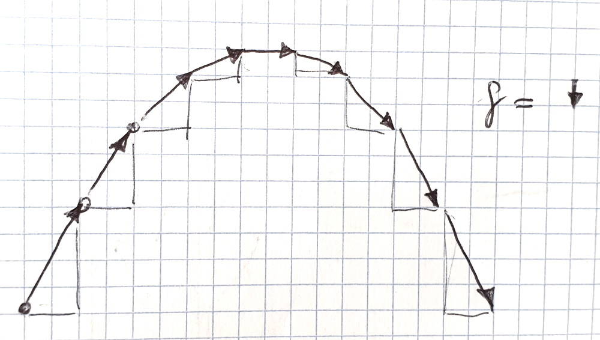

the simpicity in physics
introduction
I have had the idea of writing a book about physics and its conceptual simplicity for quite a while. However, who buys and reads real book these days? Downloading a book as an electronic version and reading it on a phone or tablet is much more convenient. But then why not writing it in html? This variant allows the insertion of links or even simulations directly into the text. It will also enable me to correct or augment the content at any time. I hope you will enjoy this web-book. Unlike real books or electronic versions like the ones offered in the kindle store, this book is free.
If you enjoy the read and think you would have bought it in a store, I have added a donation button - an in-book purchase so to say. Now let us dive right into the subject.
Simplicity
As I say on my home page, I love simplicity. There is this famous quote from EinsteinEverything should be made as simple as possible, but not simpler.
During my research in physically based simulation over the last 20 years I always hat that quote in the back of my head. What is important to note here is that making something simple is not a simple task . Blaise Pascal put it nicely:
If I Had More Time, I Would Have Written a Shorter Letter.
Steve Jobs formulated it like this:
Simple can be harder than complex: You have to work hard to get your thinking clean to make it simple. But it’s worth it in the end because once you get there, you can move mountains.
For me, moving mountains means enabling many researchers and developers to integrate physics into their work, be it computer games, movies or related fields. Having a solution that is close to or indeed as simple as possible also reveals the true problem that was investigated. Physicists would love to have the theory of everything. It would give us a fundamental understanding of the world.
Simplicity in research
Simplicity in research introduces an interesting problem. When researchers write papers, they almost always describe their methods and algorithms only but not the process of conceiving their ideas. So if authors have spent a substantial amount of time to come up with a simple method, that part will not be reflected in their article. This in turn makes it difficult for reviewers to appreciate the resulting method. Over many years, my work was rejected by Siggragph, the conference with the largest visibility in our field. Of course, many simply did not reach the high bar. Some however have been cited more than 400 times. The paper Position Based Dynamics was rejected by the symposium on computer animation. For the reason stated above, I do not put the blame on the reviewers. It is often difficult to foresee the potential impact an idea has. Also, the variance in the scores are often quite high. Here are the comments of two Siggraph reviewers on our paper small steps on physics simulation:
"this paper presents a very simple idea, much simpler than typical siggraph papers, but I think it will have a high impact on the siggraph
community". Score: Strong Accept.
and
"...in light of the relatively minor algorithmic contribution described in section 4, I do not think the paper is ready for publication at SIGGRAPH. Score: Strong Reject.
For me personally, the citation count on google scholar is more informative than the conference or journal the paper was publish in. The former reflects the opinion of the community, the latter the one of a small group of reviewers. This should also be an encouragement for the many researchers for whenever a paper with a great idea gets rejected by any conference our journal.
Coming back to this book. To be able to sell this book via a publisher, I would have to convince a group of experts that my content is relevant. In contrast, I let my readers decide. Hopefully, many will enjoy it. In addition, creating a book via a published adds a substantial amount of complexity to the core task of writing!
Simplicity in computer science
Niklaus Wirth is the professor who taught me the basics of computer science at ETH Zürich. He is a pioneer in the development of programming languages and the inventor of the PASCAL, some of you might remember. He initiated my strive for simplicity. In the 90's, he developed a complete operating system called Oberon together with a colleague. What is most astonishing about Oberon is its smallness. The core operating system including the Oberon compiler occupies only 131 KB. In contrast, here are the Visual Studio 2017 System Requirements: 130 GB of available space, depending on features installed. Of course, we do have enough disk space these days but it is still hard to understand why compilers today use more than a million times the space of the ones in the 90's where the complexity comes from. A positive example is Blender. This fantastic and comprehensive digital content creation tool takes 80Mb, downloads in 10, installs in 5 and starts up in 1 second!I am a C++ programmer. C++ is a great language. You know almost exactly what is going on behind the scenes and the generated code is very fast. However, most libraries are huge. As an example, the boost library is nice but has over 15,000 headerfiles. Typically, one needs to rund make scripts, copy lib and dll files to the right places, use the correct compiler settings, etc. etc. and hopefully, after many tries everythings works. Maybe it is just me who sees things this way. For this book I started to use Javascript and love it. You write a page of code in 10 minutes, drop it into a browser and you can immediately see the results. If it does not work properly, hit F12 to start a nice debugger with everything you need. Everything is a matter of seconds if not less. For this book I was looking for a library to visualize 3d scenes and found the incredible three.js. The core of the it is a single file of 600 KB (text, not binary) which one links with a single command in the html page. This library contains everything a 3d graphics programmer wishes for. We will make use of it extensively in this book.
Simplicity in physics
Physics has the reputation of being a complex subject, of being rocket science. If we look at equations that are studied by physicists, that is certainly true. As an example, the Navier-Stokes equation describes the evolution of fluids (liquids and gases) and looks like this:$$\rho\frac{D \mathbf{v}}{D t}=-\nabla p + \rho \mathbf{g} + \mu \nabla^2\mathbf{v}$$
For somebody who works in the field, this equation is quite easy to understand. But solving it is a different story! Nobody has so far solved the following problem which is a sub-problem of solving the equation in general: Prove or give a counter-example of the following statement: In three space dimensions and time, given an initial velocity field, there exists a vector velocity and a scalar pressure field, which are both smooth and globally defined, that solve the Navier–Stokes equations.
You can win a million dollars if you solve it. Does this mean simulating water is as hard as this? Nothing could be further from the truth. I will explain where the complexity in many physical formulas comes from and why they are often hard to solve a bit later.
First I want to show you that physics is at the heart easy to understand and to simulate. We consider the world how we perceive in everyday life. This world - rigid bodies, soft bodies, cloth, liquids or gases - is composed of simple particles with masses (atoms). Water molecules do not solve the equation above when the move. What drives nature are two simple forces. Actually four but the strong and the weak force only act inside the nucleus of atoms. They do not have visible effects if we do not cut the uncutables (the true meaning of the word atom). The two remaining forces are gravity and the electromagnetic force.
Gravity
Gravity is a force that we experience every day. Fortunately it exists, otherwise we and everything around us would float away from earth into the vastness of space and we would not be able to return without a jet pack. Gravity is certainly an effect we have to take into account. It attracts masses and it is very weak. The reason why we experience it at all is the fact that the earth is really big. Here is the simple formula describing the gravitational force that acts between to bodies of mass $m_1$ and $m_2$ and a mutual distance of $r$:$$f_g = G \frac{m_1 \times m_2}{r^2},$$
where $G$ is the gravitational constant which is just a fixed number. The force $f_g$ is actually a vector (an arrow) with a direction and a magnitude (length). The equation above gives us the magnitude. The direction points along the common line of the two objects. In the case of an object lying on the ground, it points straight downward along the line between the object and the earth's center. The only case where we see the effect of gravity is when one of the bodies is the earth. Since the center of the earth is far away from its surface, we can consider the ground to be a plane and the direction of gravity to be perpendicular to this plane, having the same direction everywhere. If we let $m_2$ be the mass of the earth and $r$ its radius the formula simplifies further and we get:$$ \mathbf{f}_g = m g,$$
where $g$ is the fixed number $9.81 m/s^2$ and $m$ the bodies mass. This force points downward along the up axis of the coordinate system everywhere. Can it be simpler?The electric force
The second force we need to consider is the electromagetic force. It can be split into the electric force and the magnitic force. The electric force plays the major role in nature. It is the one that binds electrons to the atomic nucleus, holds atoms together to form mocelules or metals, and connects molecules to form the objects around us. To put it simply, it is the force that holds matter together. The equation of the electric force vector looks very similar to the equation of the gravitational force:$$\mathbf{f}_e = k_e \frac{q_1 \times q_2}{r^2}.$$
This formula is called Coulomb's law. The quantities $q_1$ and $q_2$ that correspond to the masses in gravity are the electric charges of the objects. Masses are always positive numbers and the gravitational force always attracts the bodies. All objects fall downward. Charges on the other hand have a sign. If the signs are different, the electric force attracts them. If they are equal it pushes them apart. Fortunately we have this repelling effect, otherwise our whole universe would collapse! From these two simple equations, the entire physics of everyday objects emerges. For light and other electromagnetic waves we would need to consider magnetic effects too.While the electric force formula describes how single particles act at a small scale, the resulting force between entire atoms and molecules is best described by the Lennard Jones potential. It has the following form (image copied from wikepedia):
What this means is that there is a preferred distance $r_m$ between the atoms or molecules where the energy is minimal and the force is zero. With decreasing distance, the energy grows rapidly causing a strong repelling force. When the distance becomes larger, the energy grows as well and the force becomes attractive. When the distance is increased further, the atoms or molecules lose contact and the force converges to zero.
This simple concept lets us simulate, soft bodies, cloth, rigid bodies, liquids and gases in a very simple way (attention, spoiler alarm). Take a bunch of particles and connect them with springs. Then for
- Soft bodies: arrange the particles in a 3d pattern and use soft springs.
- Cloth: arrange them in a 2d pattern and use stiff springs for stretching resistance and soft springs for bending resistance.
- Rigid bodies: arrange them in a 3d pattern and make the springs infinitely stiff.
- Liquids: let the particles move freely. Use a one sided infinitely stiff force (to model incompressibility) that pushes them apart if they get closer than the rest distance.
- Gases: same as liquids but turn off gravity and render the particles differently (no sharp surface).
Newton's law
The last piece we need to understand physics is a way to connect bodies and forces. How can we compute the effect forces have on bodies? That is where the most famous equation of physics comes into play, Newtons second law of motion. You have certainly heard of it. Here it is:$$\mathbf{f} = m \mathbf{a}$$
What does this mean? There is a fun way to get a grasp of this equation. Simply go to the closest supermarket and fill a big shopping trolley with lots of beer. Then start to push it around in the store. The cart is one big body and you are the force acting on it. What you will find out - I am sure you already have in the past - are the following facts:- You need to push hard to get it into motion.
- Once it is in motion, it rolls effortlessly without stopping. (It will stop eventually if it crashes into a shelf or due to friction. The friction force alone will have a hard time to act against the large amount of beer though).
- You need a lot of force against the card to stop it again.
- You also need to push hard to change the carts direction! This is the reason why our experiment needs to be carried out with care. It is also the reason why you do not let your kids push your filled shopping cart around in the store.
- The amount of force you need to apply in all cases is proportional to how heavy your cart is.
A force does not move objects, objects move without force. A force changes the objects' velocities!
Acceleration, deceleration and turns are all changes of the velocity. As forces, velocities are vectors with a direction and a magnitude. Acceleration and deceleration change the magnitude, turns the direction. All forms of changes of velocity are called accelerations in physics. Accelerations are vectors too. What Newton's law says is that a force $\mathbf{f}$ causes an acceleration $\mathbf{a}$ in the same direction. The magnitude of the acceleration is $a = f / m$. This means with a bigger mass we need a bigger force to cause the same acceleration. That is all. We have the tree equations we need to simulate everything 😀.
Our first simulation
Now we are ready to create our very first simulation. For this we only need a paper and a pencil! We are going to simulate a cannon ball in free flight. In this little example we will see many concepts of simulations already.Take a squared sheet of paper. Draw a cannon ball as a dot on a line crossing in the bottom left. Simulating the ball means to determine the location of the ball in a sequence of points in time. An important observation is, that we not only have to remember the position of the ball but also its velocity. Even if we know the forces that act on our ball (gravity) at all times, we cannot derive its speed since forces do not cause speed, they only change it. The pair of the original location of the ball together with its original speed is called the initial conditions.
Here is a fascinating side note: We need to store the velocity of the objects, nature does not. If you compare the fotographs of a cannon ball that moves from left to right and one that moves from right to left, the two pictures will look exactly the same down to the tiniest level of matter. Where is the information about motion stored? How does nature know that one ball needs to be moved to the right and one to the left in the future course of time? We do not know.
In any case, for our cannon ball we need to represent its velocity. What would be a good way to do this? Have a look at my drawing:

Let us say we want to find the cannonball's position at times t = 0 seconds, t = 1 second, etc. In this case we say that we take a time step of one second. We can define the velocity to be an arrow that points from the current position to where the ball would be in the next time step, if no forces acted on it. Let us define the length of the squares to be one meter. In this case, the velocity of the ball at the current time step is the length of the arrow and has the unit meter per second. The direction of the arrow determines the direction of the velocity. In my example I have chosen the velocity to be
$$\mathbf{v} = \left[\begin{array}{c}2\\4\end{array}\right]m/s$$
I used a bold face for the velocity $\mathbf{v}$ because it is a vector in 2d. Mine goes 2 to meters to the right and 4 meters up per second.After a time step of one second, the ball has moved to the top of the velocity arrow. With no forces, the ball would continue flying in the same direction with the same speed. In our case however, gravity will change the velocity. We will take this effect into account at every time step. We can represent the acceleration $\mathbf{g}$ that gravity causes as an arrow as well. The arrow points downwards. Let us assume that its length is the length of one square (in reality it hast the length of about 10 squares but we would run out of paper quickly with the true value). At every point in time, we change the velocity vector by adding the acceleration vector to the current velocity. In our case, this reduces the vertical velocity component by one meter per second. What is the unit of the acceleration vector? It tells us how much the velocity changes in one second so it is meter per second per second or meter per second squared. The resulting simulation will look like the image above. Try different initial velocities too.
Where is the mass?
In the simulation above we did not consider the mass of the ball. The interesting fact is that the trajectory looks exactly the same, no matter how heavy or light the canon ball is (not considering air resistance). As we saw earlier, the gravitational force on our ball has the magnitude $mg$. This means the heaver the ball, the stronger the force. The acceleration this force causes on the balls (according to Newton's law) is$$a = f / m = (m g) / m = g.$$
The mass drops out, why? The heaver the ball the stronger the gravitational force. However, heaver objects also need stronger forces to get accelerated. These two effects cancel each other out perfectly. This is not at all obvious. To be precise, objects have a mass $m_{Gravity}$ which says how strong a gravitational force they cause. They also have a mass $m_{Newton}$ which says how strong a force is needed to accelerate them. These two masses are the same for all objects which simplifies physics quite a lot. This phenomenon is called the equivalence principle. It lead Einstein to the development of general relativity.Our first program
Numeric vs. Analytic Solution
Approximation The reason why our simulation only approximates the true curve is an assumption we took: We assumed that that gravity only changes the velocity at times 0s, 1s, 2s and has no effect inbetween. How can we fix this? We can take the effect of gravity into account in the middle of the time step.
class Voila {
public:
// Voila
static const string VOILA = "Voila";
// will not interfere with embedded tags.
}
When $a \ne 0$, there are two solutions to $ ax^2 + bx + c = 0 $ and they are $$ x = {-b \pm \sqrt{b^2-4ac} \over 2a}. $$
forces
conclusion